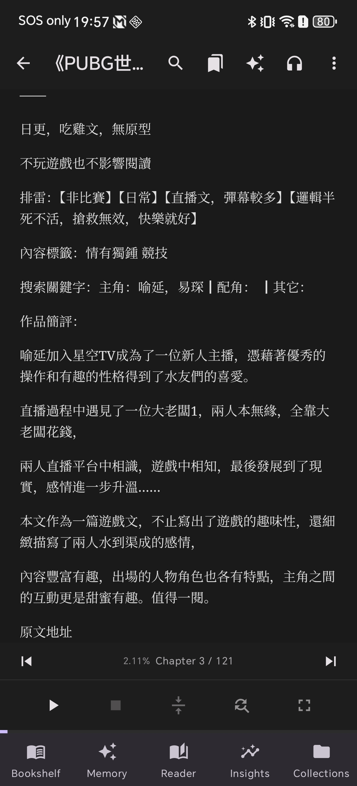
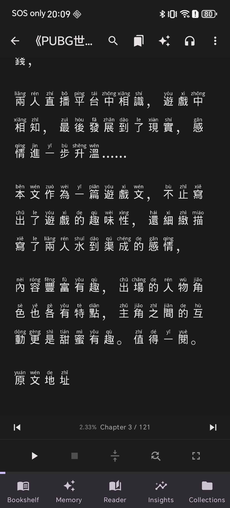
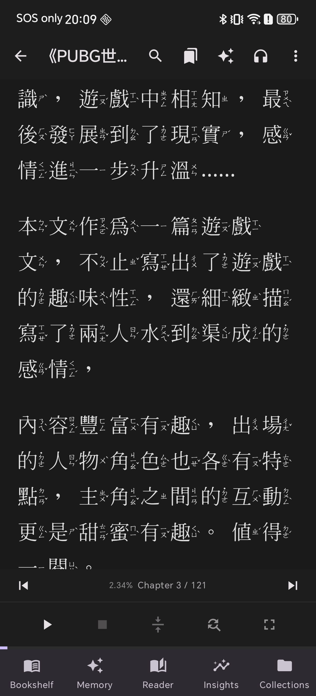

Shiori EPUB Reader offers advanced typography personalization. In addition to forcing standard system fonts, you can import external TrueType (.ttf) and OpenType (.otf) font files. You can assign different fonts for individual languages (e.g., separate custom fonts for Thai, English, Japanese, and Chinese), ensuring optimal reading comfort.
Video Walkthrough (YouTube Shorts)
Watch the quick visual guide to see how to import and configure custom fonts:
Font Showcase Comparison
Here is a comparison showing the default system font versus two different types of imported custom fonts:

Default System Font

Custom Font: Rounded Style

Custom Font: Serif Style
Part 1: Importing Custom Font Files
1Open Settings
Launch Shiori and tap the Settings icon in the bottom navigation bar.
2Tap Reading Settings
Select the Reading menu to access reader display preferences.
3Tap Reader Font
Look for the Reader font option and tap it to manage your font directory.
4Language & Layout Info
A helpful tip popup will explain how multi-language font selection works, especially for CJK (Chinese, Japanese, Korean) layout styling.
5Tap Import Font
Tap the Import Font button at the bottom of the list. A file explorer will open; choose your desired .ttf or .otf font file from your phone storage.
6Import Multiple Fonts
You can import multiple font styles (e.g. rounded fonts and clean serif fonts) to suit different books and moods.
7Verify Listing
Your imported fonts will appear in the library font catalog, showing the custom font name and details.
Part 2: Applying Custom Fonts in the Reader
8Open Reader Settings
While reading an EPUB book, tap the center of the screen to reveal navigation bars. Tap the three dots (•••) in the top-right corner, then select Reading Settings.
9Select Target Language
Choose the target language you want to customize. Shiori allows you to define unique typefaces for separate languages independently.
10Assign Imported Font
Select your newly imported font from the list. The reader will instantly format the text using your custom font styling!
แอปพลิเคชัน Shiori EPUB Reader เปิดโอกาสให้ผู้ใช้อ่านหนังสือได้อย่างเพลิดเพลินยิ่งขึ้นผ่านการปรับแต่งรูปแบบอักษร นอกจากการบังคับใช้ฟอนต์มาตรฐานของระบบแล้ว คุณยังสามารถนำเข้าไฟล์ฟอนต์ภายนอกสกุล TrueType (.ttf) และ OpenType (.otf) เพื่อใช้แยกเฉพาะรายภาษา (เช่น กำหนดฟอนต์เฉพาะสำหรับภาษาไทย ภาษาอังกฤษ ภาษาญี่ปุ่น และภาษาจีน) ได้อย่างอิสระ
วิดีโอแนะนำขั้นตอนการตั้งค่า (YouTube Shorts)
ชมคู่มือแนะนำการนำเข้าและเลือกใช้งานฟอนต์อย่างละเอียดแบบวิดีโอสั้นได้ที่นี่ครับ:
เปรียบเทียบการแสดงผลฟอนต์แต่ละแบบ
ตัวอย่างเปรียบเทียบระหว่างฟอนต์ระบบเริ่มต้น กับฟอนต์ภายนอกที่นำเข้ามาใช้งานเพิ่มเติมในแบบต่าง ๆ:
ฟอนต์ระบบเริ่มต้น (Default)
ฟอนต์นำเข้า: สไตล์มนหัวกลม
ฟอนต์นำเข้า: สไตล์อักษรมีหัวพรีเมียม
ส่วนที่ 1: ขั้นตอนการนำเข้าไฟล์ฟอนต์ภายนอก
1เข้าสู่เมนูตั้งค่า
เปิดแอป Shiori ขึ้นมา จากนั้นแตะไอคอนเมนู Settings (ตั้งค่า) ที่อยู่แถบนำทางด้านล่าง
2เลือกตั้งค่าการอ่าน
เลือกหัวข้อเมนู Reading (การอ่าน) เพื่อเข้าไปปรับแต่งค่าเกี่ยวกับการแสดงผลหน้าหนังสือ
3แตะเลือก Reader Font
มองหาตัวเลือก Reader font (ฟอนต์ของผู้อ่าน) แล้วแตะเลือกเข้าไปเพื่อจัดการแคตตาล็อกฟอนต์
4หมายเหตุเกี่ยวกับภาษาและการแสดงผล
ระบบอาจแสดงข้อมูลคำแนะนำเบื้องต้นเกี่ยวกับวิธีการทำงานของฟอนต์ภาษาต่าง ๆ (โดยเฉพาะอักษรกลุ่มจีน ญี่ปุ่น เกาหลี)
5แตะปุ่มนำเข้าฟอนต์
แตะปุ่ม **Import Font** ด้านล่างสุด ระบบจะเปิดตัวจัดการไฟล์ในเครื่องขึ้นมา ให้คุณแตะเลือกไฟล์ฟอนต์ .ttf หรือ .otf ที่เก็บไว้ในเครื่อง
6นำเข้าฟอนต์เพิ่มเติม
คุณสามารถเลือกนำเข้าฟอนต์เพิ่มได้หลายรูปแบบ (เช่น นำเข้าไว้ทั้งแบบมีหัวและไม่มีหัว) เพื่อรองรับประเภทหนังสือที่หลากหลาย
7ตรวจสอบรายชื่อฟอนต์
ฟอนต์ที่ถูกนำเข้าเรียบร้อยจะแสดงอยู่ในหน้าต่างรายการฟอนต์ พร้อมให้คุณเลือกใช้งานในหนังสือ
ส่วนที่ 2: วิธีเปลี่ยนมาใช้ฟอนต์ที่นำเข้าขณะอ่านหนังสือ
8เปิดเมนูควบคุมการอ่าน
ในหน้าเปิดอ่านหนังสือ ให้แตะบริเวณกลางจอเพื่อให้แถบเมนูปรากฏ แตะปุ่มจุดสามจุด **(•••)** ที่มุมขวาบน แล้วเลือก **Reading Settings**
9เลือกภาษาเป้าหมาย
แตะเลือกภาษาของตัวหนังสือที่คุณต้องการตั้งค่า เพื่อเปลี่ยนฟอนต์ให้กับภาษานั้น ๆ โดยเฉพาะ
10เลือกและใช้ฟอนต์ใหม่
แตะเลือกฟอนต์ที่นำเข้ามา ตัวอักษรบนหน้าหนังสือจะถูกปรับเปลี่ยนไปใช้ฟอนต์ใหม่ที่คุณเลือกทันที!
Shiori EPUB Readerは、細部まで調整可能な文字レイアウトのパーソナライズ機能を提供します。標準のシステムフォントを強制するだけでなく、外部のTrueType (.ttf)やOpenType (.otf)フォントファイルをインポートし、表示言語ごとに個別のフォント（例：日本語、タイ語、英語、中国語それぞれに別のカスタムフォント）を割り当てることができます。これにより、どのような書籍でも最適な可読性を実現します。
操作手順動画 (YouTube Shorts)
フォントのインポートと設定手順については、こちらのクイック動画ガイドをご覧ください。
フォント表示比較
デフォルトのシステムフォントと、インポートされた異なる書体のカスタムフォントの比較例です。
パート1：フォントファイルのインポート手順
1設定を開く
Shioriを起動し、画面下部のナビゲーションバーにあるSettings（設定）アイコンをタップします。
2読書設定を選択
フォントや読書表示の設定を行うため、Reading（読書設定）メニューをタップします。
3Reader Fontをタップ
Reader font（リーダーフォント）オプションを探し、フォント管理画面を開くためにタップします。
4多言語設定に関するヒント
多言語対応（中国語、日本語、韓国語など）のフォント切り替えメカニズムに関する説明ポップアップが表示されます。
5フォントのインポート
画面下部のImport Fontボタンをタップします。ファイルマネージャーが開くので、端末のストレージ内から任意の .ttf または .otf ファイルを選択します。
6複数のフォントをインポート
書籍のジャンルや気分に合わせて、明朝体やゴシック体など複数の異なるカスタムフォントを追加登録できます。
7インポート確認
インポートが正常に完了すると、フォント名と共にフォントの一覧リストに表示されます。
パート2：読書画面でのカスタムフォントの適用
8ビューア内で設定を開く
書籍の読書画面で画面中央を軽くタップして操作バーを表示させます。右上にある3点リーダー (•••)ボタンをタップし、Reading Settingsを選択します。
9設定対象の言語を選択
フォントスタイルをカスタマイズしたい対象の言語を選択します。Shioriでは特定の言語のテキストにのみ個別のフォントを適用可能です。
10フォントを割り当てる
一覧からインポートしたカスタムフォントを選択すると、選択した言語のテキスト部分に即座に新しいフォントが適用されます！
Shiori EPUB 阅读器 提供了高度自定义的排版控制。除了强制使用设备系统默认的字体之外，您还可以自主导入外部 TrueType (.ttf) 和 OpenType (.otf) 字体文件，并为不同的语言设置专有字体（例如：分别为中文、泰文、英文和日文绑定不同的自定义字体），以带来最佳、最舒适的视觉阅读体验。
视频演示教程 (YouTube Shorts)
请观看以下快速视频指南，直观地了解导入和设置字体的具体步骤：
不同字体效果对比展示
以下是系统自带字体与两种不同艺术风格的导入自定义字体之间的渲染对比效果：
第一部分：如何导入自定义字体文件
1打开设置
打开 Shiori 阅读器，点击屏幕下方导航栏右侧的 Settings（设置）图标。
2进入阅读设置
在设置列表中，选择并点击 Reading（阅读设置）选项，以便调整书籍显示风格。
3点击 Reader Font
点击 Reader font（阅读器字体）项，进入字体库管理页面。
4语言与排版提示
系统此时会弹出一个提示弹窗，向您介绍多语言排版（如中日韩汉字排版）切换字体的基本工作机制。
5点击导入字体
点击页面下方的 Import Font 按钮，调出手机本地文件管理器，并选择您存放的 .ttf 或 .otf 格式字体文件。
6导入多个字体
您可以根据书籍的不同主题和个人偏好，一次导入多个不同的自定义字体文件。
7确认字体列表
导入成功后，自定义字体会立即出现在列表目录中，显示具体的字体属性和样式名称。
第二部分：如何在书籍阅读中应用新导入的字体
8打开阅读菜单设置
在打开的书籍阅读界面，点击屏幕正中央呼出功能栏。点击右上角的 **三点 (•••)**，然后点击 **Reading Settings**。
9选择您要配置的语言
在阅读字体菜单中，点击并选择您需要配置哪一种显示语言的字体。Shiori 支持不同语言文字应用不同的专有字体。
10应用导入的自定义字体
在弹出列表中勾选刚才导入的自定义字体。阅读界面中的文本将立即重绘并渲染为您挑选的新字体！